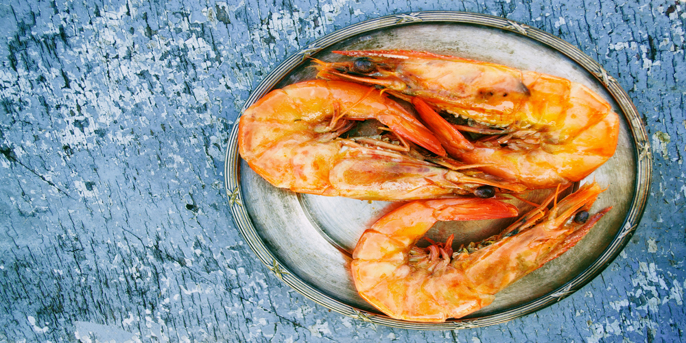
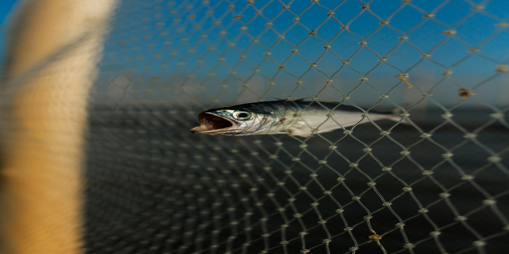

FAQ
 What is the best way to store seafood?
Seafood should be stored in the coldest part of the refrigerator, ideally at temperatures between 32°F and 38°F. If you're not planning to cook it right away, freezing seafood is a great option to preserve its freshness.
How do I know when my seafood is cooked?
Seafood is typically cooked when it reaches an internal temperature of 145°F. Fish should be opaque and flake easily with a fork, while shrimp and shellfish should be pink and firm.
Can I use frozen seafood in your recipes?
Yes! Frozen seafood is a convenient and affordable option for most recipes. Just make sure to properly thaw it before cooking to ensure even cooking and the best texture.
Do you have any tips for cooking fish fillets?
To cook fish fillets perfectly, season them simply with salt, pepper, and a bit of lemon juice. Pan-searing in a hot skillet with butter or olive oil gives a crispy golden crust, while keeping the center tender and flaky.